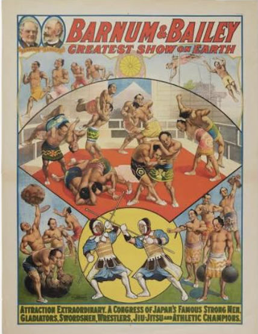

The New York Times Reviews of Okoshi's Paintings
During her lifetime, Okoshi's work was frequently reviewed in group and individual shows. Twenty years after her death in 2006, the following review articles in The New York Times can still be accessed from their archives:
-
Rosenberg, K. (2009, May 21). "Women determined not only to make art but also to have it seen." The New York Times.
Read Karen Rosenberg's review.
Okoshi's painting, "Ruins at Sunset," was included in the 2009 show, “A Parallel Presence: National Association of Women Artists, 1889-2009,” at the UBS Art Gallery in Manhattan. The exhibition was a small selection of the association's 500-piece collection of women artists housed at the Jane Voorhees Zimmerli Art Museum on the Rutgers University campus.
-
Genocchio, B. (2009, February 27). "Primer and show on women who loved and created art." The New York Times.
Read Benjamin Genocchi's review.
Regarding the same 2009 show above, Okoshi's work was highlighted in the area of abstractionism.
-
Harrison, H. (1985, December 19). "Art; Japanese abstractions: looking west." The New York Times.
Read Helen A. Harrison's review.
In this Garden City, NY show, praise was given to Plenum Number 45 among Japanese abstractions as its "graceful strokes" were interpreted as evoking calligraphic gestures.
-
Harrison, H. (1985, May 19). "Art; Eastern forms, western ties." The New York Times.
Read Helen A. Harrison's review.
In this group show of four artists at the Port Washington, NY Public Library gallery, Okoshi's art is recognized in its blending of Eastern and Western traditions.
Note: A subscription to The New York Times may be required for access after a monthly quota of free articles is reached.
Other Reviews
Okoshi was shown in many group and individual exhibitions. Some other reviews follow below:
-
E.F. (1987, October). "Sumiye Okoshi at the Viridian." Manhattan Arts.
Read the cover story review.
Okoshi's one-woman show at this major Chelsea gallery in 1987 was praised for its innovative approach to combining traditional Japanese techniques with contemporary Western aesthetics.
-
Unknown Author (1981, December 7). "'Fragmented Image'at NAS." The Washington Post.
Read the Style section article.
A review of Okoshi's work at a five-person group show in 1981 at the National Academy of Sciences, which aquired one of her paintings for a conference room.
-
Freedman, Diana (1987, October 16). "'Myriad approaches by exploring spirits'." ARTspeak, p.4.
Read about 1987 diversity in the art world.
Freedman's review began with highlighting the unique ways in which Okoshi's work challenged conventional boundaries between East and West.
Family History
Sumiye Okoshi: eldest daughter of Ushiyama Masanaari,
who introduced judo to the
US, and neon lights to Japan

In the public domain.
Sumiye Okoshi was born in Seattle, Washington, in 1919, the eldest daughter of Masanaari Ushiyama, a Japanese who immigrated to the US around 1910. To explain the "new money" in which she grew up that was mentioned earlier, is to recognize the pioneering spirit in her father. Arriving in the US around 1910, Ushiyama saw that anti-Asian discrimination on the West Coast closed too many opportunities to him. He went inland to join the Barnum & Bailey Circus, traveling and demonstrating judo throughout the country, inviting and daring the participation of tall, husky volunteer wrestlers from audiences who were seeing Asian people for the first time in their lives. Generally, Midwesterners saw these lone Japanese as more of a curiosity than as an economic or social threat to their lives, as had been institutionalized by politicians and newspapers on the West Coast. Ushiyama became fluent in English, and was paid well enough to eventually study business at Valparaiso University in Indiana.
Sometime around Sumiye's birth in Seattle, Ushiyama obtained the exclusive rights to neon lights for use in Japan from the French inventor, Georges Claude. Ushiyama moved the family to Tokyo when Sumiye was barely one year old, and as she would later acknowledge with pride, "They always said of my father, 'He lit up the Ginza.'" In the early 1920s, Ginza shopping district became a spectacle of neon-lit storefronts and advertisements that typifies commercial areas of modern Tokyo, as shown below.
Upon graduating from a private Espicopalian school, Sumiye Ushiyama married Toshiyaki Okoshi, a newspaper man for Asahi Shimbun. During WWII, he was drafted as a journalist for the Japanese Imperial Army. He died in 1946, one night after leaving a tuberculosis camp to rejoin Sumiye as the couple moved into a simple house within the ruins of Tokyo. Her earlier art perhaps includes more of the reflections of war that left cities in death and dust, and herself a young widow. In her later works we witness increasing tones of bright color, with even a hint of neon, seen in her washi and acrylics on the canvases of her "Plenum" and "Persistent Light" series.